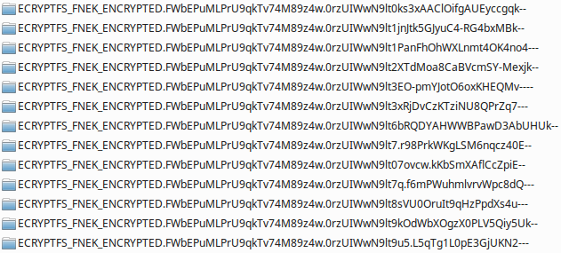

An embarrassing thing happened to me lately: I forgot the password to my PC. The connection between my neurons responsible for keeping it suddenly disappeared. And no matter how hard I tried, I couldn't bring it back.
Of course I make backups, but this time I skipped one and I had some important files that were not copied to my external drive. Normally I would just use a Live USB stick to access the hard drive, recover my data and install a fresh Xubuntu on my PC.
The problem was that I encrypted my home directory. To decrypt it, I needed a password (which, as I mentioned, was gone). Hopefully I recalled that during the encryption process a mount passphrase was generated, and I was informed that I should keep it in case I forget the password. So I could just use this passphrase to get my precious data and the problem was solved.
Well, not exactly. The process of decrypting my home directory was a bit more complicated than I expected and I ran into some problems. Here is how I overcame them.
ecryptfs-recover-private (not brilliant)The solution recommended by most people on the Internet was to use ecryptfs-recover-private. I did that (running from a Live USB stick), and I discovered my first problem:
xubuntu@xubuntu:~$ sudo ecryptfs-recover-private
INFO: Searching for encrypted private directories (this might take a while)...
find: ‘/run/user/999/gvfs’: Permission denied
find: File system loop detected; ‘/sys/kernel/debug/pinctrl’ is part of the same file system loop as ‘/sys/kernel/debug’.
Apparently, I had to run this command from my PC's root directory, not from my
Live USB. Nothing a small chroot couldn't fix:
xubuntu@xubuntu:~$ sudo chroot /media/xubuntu/c1ecb1af-7c15-470f-a777-48ed5eb60247/
root@xubuntu:/# ecryptfs-recover-private
INFO: Searching for encrypted private directories (this might take a while)...
INFO: Found [/home/.ecryptfs/pawel/.Private].
Try to recover this directory? [Y/n]:
/usr/bin/ecryptfs-recover-private: 63: /usr/bin/ecryptfs-recover-private: cannot create /dev/null: Permission denied
INFO: Found your wrapped-passphrase
Do you know your LOGIN passphrase? [Y/n] n
INFO: To recover this directory, you MUST have your original MOUNT passphrase.
INFO: When you first setup your encrypted private directory, you were told to record
INFO: your MOUNT passphrase.
INFO: It should be 32 characters long, consisting of [0-9] and [a-f].
Enter your MOUNT passphrase:
INFO: Success! Private data mounted at [/tmp/ecryptfs.z7cibvV4].
The encrypted home directory was found without a problem. Without my password, I had to use my mount passphrase, and the files were successfully decrypted!
Or so I thought. The content of the mounted directory looked like this:

The files might have been available now, but they were rather useless without their original names. So I had to find something better.
mount -t ecryptfs (good enough)Another solution was to mount the encrypted directory. To do this, I first had to add the filename encryption key (fnek) to the keyring (using the mount passphrase):
xubuntu@xubuntu:~$ sudo ecryptfs-add-passphrase --fnek
Passphrase:
Inserted auth tok with sig [9b15cb67b475a9e1] into the user session keyring
Inserted auth tok with sig [d06fa6176f780bdb] into the user session keyring
The important key signature here is the second one (d06fa6176f780bdb).
Next I could mount my home directory:
xubuntu@xubuntu:~$ sudo mount -t ecryptfs /media/xubuntu/c1ecb1af-7c15-470f-a777-48ed5eb60247/home/.ecryptfs/pawel/.Private/ /mnt
Passphrase:
Select cipher:
1) aes: blocksize = 16; min keysize = 16; max keysize = 32
2) blowfish: blocksize = 8; min keysize = 16; max keysize = 56
3) des3_ede: blocksize = 8; min keysize = 24; max keysize = 24
4) twofish: blocksize = 16; min keysize = 16; max keysize = 32
5) cast6: blocksize = 16; min keysize = 16; max keysize = 32
6) cast5: blocksize = 8; min keysize = 5; max keysize = 16
Selection [aes]:
Select key bytes:
1) 16
2) 32
3) 24
Selection [16]:
Enable plaintext passthrough (y/n) [n]:
Enable filename encryption (y/n) [n]: y
Filename Encryption Key (FNEK) Signature [9b15cb67b475a9e1]: d06fa6176f780bdb
Attempting to mount with the following options:
ecryptfs_unlink_sigs
ecryptfs_fnek_sig=d06fa6176f780bdb
ecryptfs_key_bytes=16
ecryptfs_cipher=aes
ecryptfs_sig=9b15cb67b475a9e1
Mounted eCryptfs
In the first step I provided the mount passphrase. I kept the default
values of most of the other options, except for Enable filename encryption.
I then entered the key signature generated by ecryptfs-add-passphrase.
My files were finally decrypted and they kept their original names!
Now I could copy them and install Xubuntu on my PC.
The decryption process using the mount passphrase turned out to be possible, but not as straigtforward as I expected. I investigated one more approach, one I think would be perfect for this situation: changing the login password for the encrypted home directory. Unfortunately, I couldn't find a way to do this without knowing the old password.
I hope that this post will help you with decrypting your data. If you find a better solution or spot a mistake in this post, please let me know.